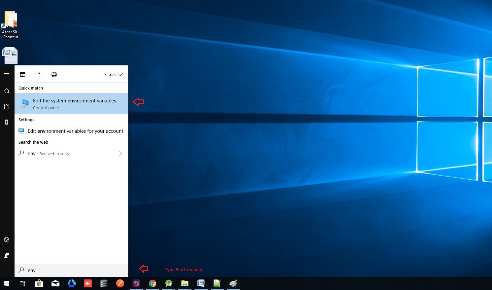

eStore - Flutter App for WooCommerce
Thank you for purchasing the code. If you have any questions that are beyond the scope of this help file, please feel free to message me via my user page contact form here. Thanks so much!
How to Setup Java jdk-11 on windows
- If your System already have Java jdk-8 installed then you can skip this step.
- Download Java-11 jdk by clicking below link.
(JAVA jdk-11) - Download Java-11 JDK for your version 32 bit or JDK download 64 bit.
- When you click on the Installation link the popup will be open. Click on I reviewed and accept the Oracle Technology Network License Agreement for Oracle Java SE development kit and you will be redirected to the login page. If you don’t have an oracle account you can easily sign up by adding basics details of yours.
- Once the Java JDK 11 download is complete, run the exe for install JDK. Click Next
- Select the PATH to install Java in Windows… You can leave it Default. Click next.
- Once you install Java in windows, click Close
- Now set your enviournment variable
- From the Start search bar in , type ‘env’ and select Edit environment variables for your account
- Under User variables check if there is an entry called Path:
- Click on Edit. then Dialog will open from it, now click on new and Copy the path of bin folder which is installed in JDK folder. then Paste Path of bin folder in Variable value. Click on OK Button.
- Repeat above process but this time set variable name JAVA_HOME instead of "path/PATH", and set JDK bin folder path in the variable value.
- Now Restart your pc for changes to take effect
- Now check everything is ok or not
- Go to command prompt and type javac commands.
If you see a screen like below, Java is installed.




How to Setup Flutter in Android Studio
- Download Lastest Flutter SDK from below link.in that click on flutter_window_xxx.zip button.
- Flutter sdk Here
- Extract the zip file and copy flutter folder into your desired installation location for the Flutter SDK (eg. C:\src\flutter; do not install Flutter in a directory like C:\Program Files\).
- Inside Flutter folder find flutter_console.bat. Start it by double-clicking.
<\li>

- Now set your enviournment variable
- From the Start search bar in , type ‘env’ and select Edit environment variables for your account
- Under User variables check if there is an entry called Path:
- Click on Edit.new Dialog open from it click on new and copy full path to flutter\bin as its value
- Now Restart your pc for changes to take effect
- Now check everything is ok or not
- open cmd and do following shown in below picture
- Now open Android Studio and create new flutter project then select your flutter sdk file to the location where we have downloaded earlier and that's it


How to first run project
- Go to file > open > then choose your downloaded project location then your project will open.and if you see upar right part 'enable dart support' then click that and go to pubspec.yaml file and in uper right part click pub get or package get and then press run button.

- If your are getting error then you can perform below hack
- if in your system firewall is on, then you can temporary disable firewall and then try to run project
- if your flutter channel is not stable then you need to change it to stable. you can check your flutter channel by terminal.
- go to android studio in bottom line click on terminal, in terminal write flutter channel.as shown below.
- if your are not in stable then write flutter channel stable
- go to Tools > Flutter > Flutter Clen.
- go to file > invalidate cache/ restart

How to setup Backend
- Login to your WordPress Dashboard.
- In your WordPress Admin Menu, go to Plugins > Add New.
- Click on Upload Plugin button found on top left corner of page.
- Click on Browse (1), Select the .zip file of your plugin in your computer, and click Install Now (2) button.
- At this point, the plugin is installed. You can click on Activate Plugin link to work with it.


How to link Application with Backend
- Once you've installed plugin and activated
- Open Flutter Project in android studio.
- Navigate to lib > data_provider > api_constant.dart file
- Add your wordpress domain in highlighted area.
- Run your project by connecting physical device or virtual device.
Support
If you face any kind of issue then you can reach us via whatsapp Click Here.
Best of luck for your project.
Rating
If you like our app, we will highly appreciate if you can provide us a rating of 5. You can rate us from your CodeCanyon Menu > Download page.